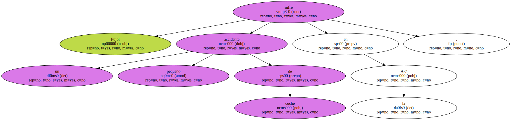

Pujol sufre un pequeño accidente de coche en la A-7.
El incidente se produjo el pasado lunes, cuando el vehículo que abría la comitiva del presidente de la Generalitat chocó contra un camión.
El conductor del coche en el que viajaba Pujol frenó para evitar el impacto, momento en el que recibió un golpe trasero del tercer automóvil de la comitiva presidencial.

El accidente se saldó sin heridos.